library(ggplot2)
set.seed(5400)
n <- rep(c(10, 25, 40, 100), each = 100)
y <- sapply(n, function(n) mean(rnorm(n)))
ggplot() + geom_point(aes(y, factor(n)),
position = position_jitter(height = 0.15)) +
labs(x = "sample mean", y = "sample size")STAT:5400 Section 3.2 — CLT and Confidence Intervals
Most code blocks on this page run in your browser. Click Run Code, change the code, and run it again. The few blocks that need a Codespace have a Codespace button. The R session loads binom for the last section, so the first block you run takes a few extra seconds.
1 Sampling distribution
1.1 Framework of statistical inference
- Data: random sample \(X_1, \ldots, X_n\).
- Model: underlying distribution \(\mathrm{N}(\mu, \sigma^2)\).
- Assumption: parametric models with unknown parameters.
- Goal: estimate population parameters \(\mu\), \(\sigma^2\).
- Statistic: \(\hat{\mu}\), e.g. the sample mean \(\bar{X} = (X_1 + \ldots + X_n)/n\), which is a function of the data.
1.2 A random sample of 10 observations from a population
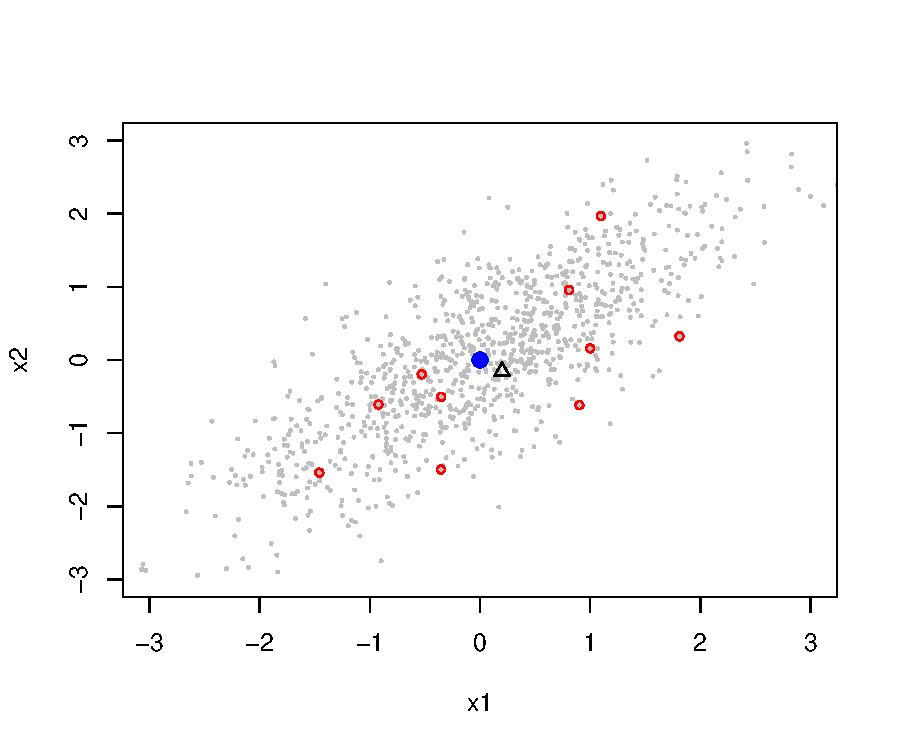
Population: \(\mathbf{x} \sim \mathrm{N}_2(\mathbf{0}, \boldsymbol{\Sigma})\), where
\[ \boldsymbol{\Sigma} = \left[\begin{array}{cc} 1 & 0.25 \\ 0.25 & 1 \\ \end{array}\right]. \]
The grey points are the population, and the red points are one sample of 10. The black triangle is the mean of this sample, and the blue dot is the true mean.
1.3 Twenty samples, and the cloud of their means
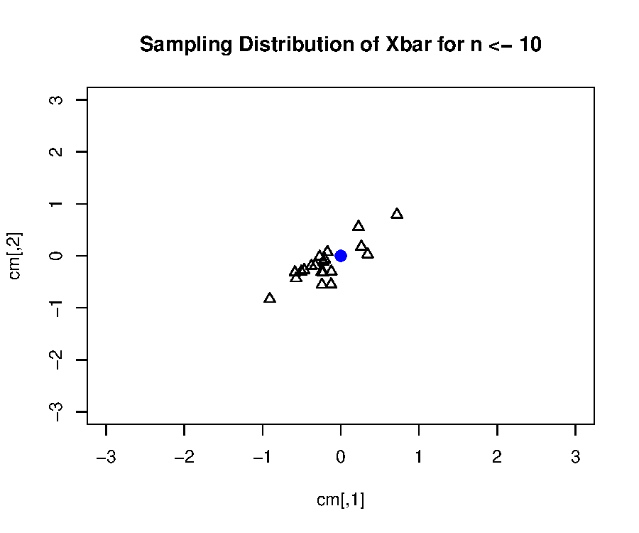
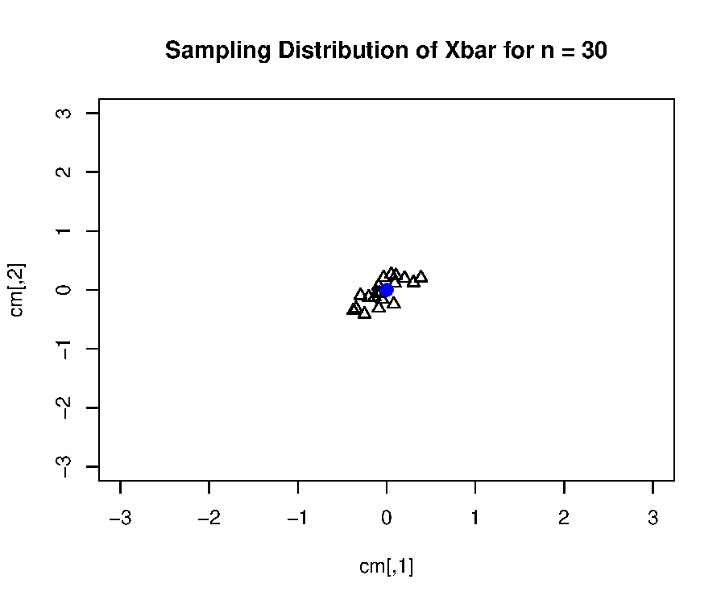
Each triangle is one sample mean. With \(n = 30\), the sample means are less spread out around the population mean than with \(n = 10\). The spread of these triangles shows the sampling distribution of the mean.
1.4 One dimension, four sample sizes
Run in Codespace: ggplot2 is not installed in the browser session.
file:
notes/section3/run/s3p2_ggplot.R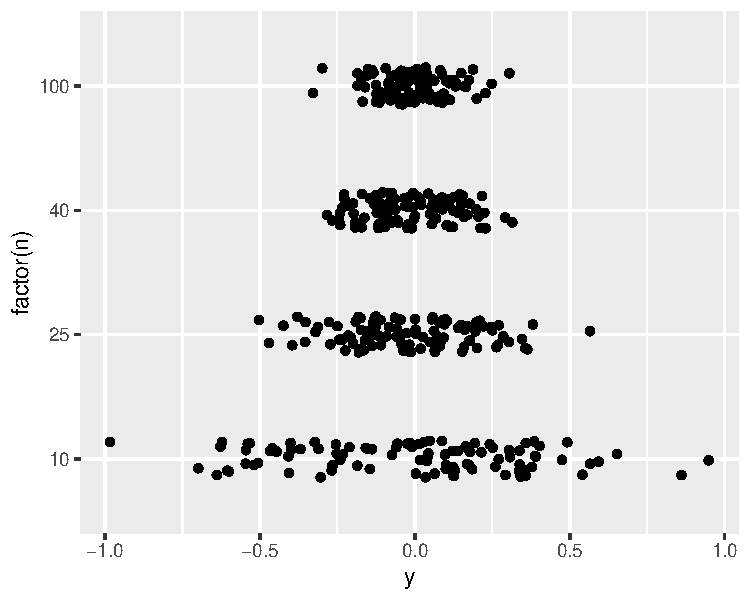
1.5 Distribution of the sample mean for normal populations
Let \(X_1, \ldots, X_n\) be a random sample from \(\mathrm{N}(\mu, \sigma^2)\). Let \(\bar{X} = n^{-1} \sum_{i=1}^n X_i\). Then
\[ \begin{aligned} \mathrm{E}(\bar{X}) &= \mathrm{E}\left(\frac{X_1 + \ldots + X_n}{n}\right) = \frac{1}{n}\left(\mathrm{E}X_1 + \ldots + \mathrm{E}X_n\right) = \mu,\\ \mathrm{Var}(\bar{X}) &= \frac{1}{n^2}\mathrm{Var}\left(X_1 + \ldots + X_n\right) \\ &= \frac{1}{n^2}\left(\mathrm{Var}(X_1) + \ldots + \mathrm{Var}(X_n)\right) \qquad \text{due to independence}\\ &= \sigma^2/n. \end{aligned} \]
Since a linear combination of normal random variables is also normally distributed,
\[ \bar{X} \sim \mathrm{N}(\mu, \sigma^2/n). \]
1.6 Simulating the sampling distribution
We used a for loop to generate the samples. A faster way is to create a matrix and then compute the row means:
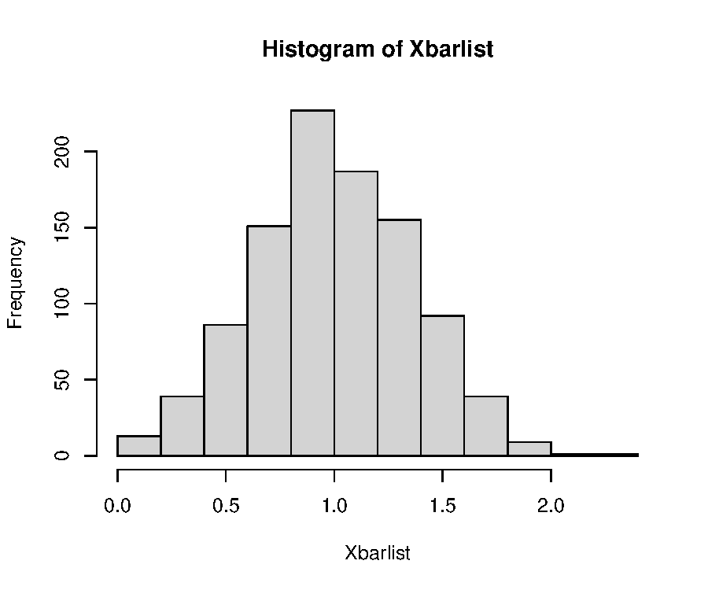
1.7 Functions qqnorm and qqline in R
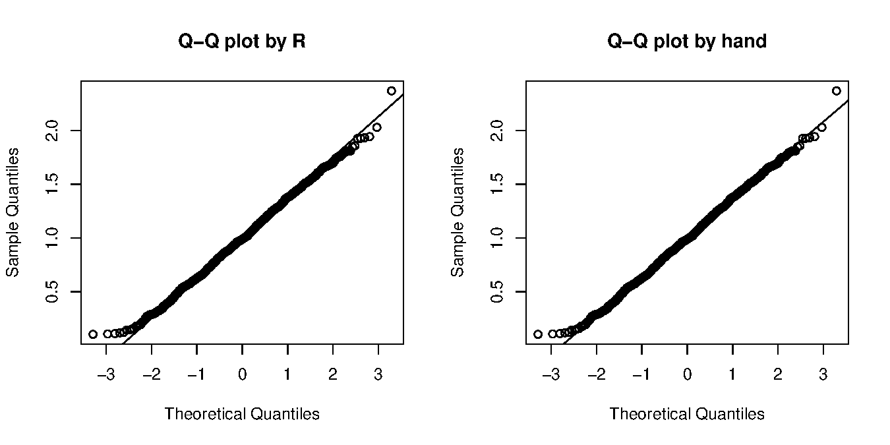
In Python, the function statsmodels.api.qqplot also makes this plot.
1.8 Sampling distribution
- Sampling distribution is the probability distribution of a statistic (a random variable).
- In practice, only one sample is observed. We can investigate the sampling distribution from the theory.
For the sample mean of a random sample of size \(n\) from \(\mathrm{N}(\mu, \sigma^2)\),
\[ \bar{X} \sim \mathrm{N}(\mu, \sigma^2/n). \]
The variance of \(\bar{X}\) decreases as the sample size \(n\) increases.
1.9 Four sample sizes
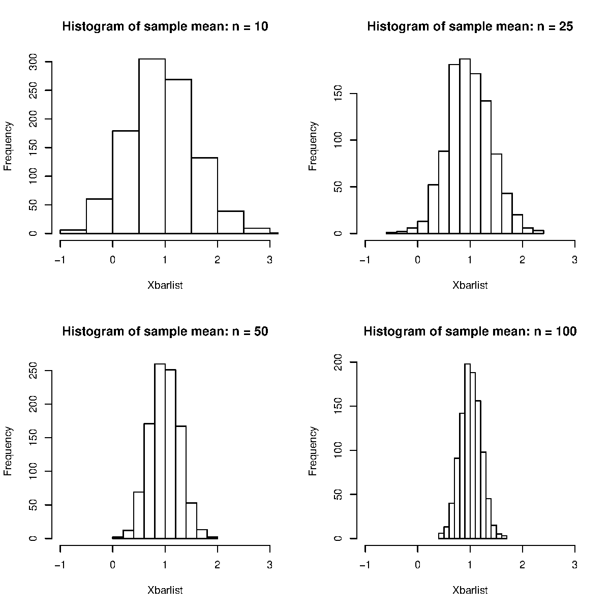
2 Central limit theorem
2.1 Classical review of the central limit theorem
Let \(X_1, \ldots, X_n\) be a random sample drawn from a distribution with mean \(\mathrm{E}X = \mu\) and variance \(\mathrm{Var}(X) = \sigma^2 < \infty\). Let \(\bar{X} = n^{-1} \sum_{i=1}^n X_i\).
The classical central limit theorem states that
\[ \frac{\sqrt{n}(\bar{X} - \mu)}{\sigma} \stackrel{\mathcal{D}}{\rightarrow} \mathrm{N}(0, 1), \]
which is equivalent to saying
\[ \bar{X} \text{ approximately follows } \mathrm{N}(\mu, \sigma^2/n), \]
if the sample size \(n\) is sufficiently large.
The population no longer has to be normal. The next two examples use a uniform and an exponential population.
2.2 CLT for random samples drawn from the uniform
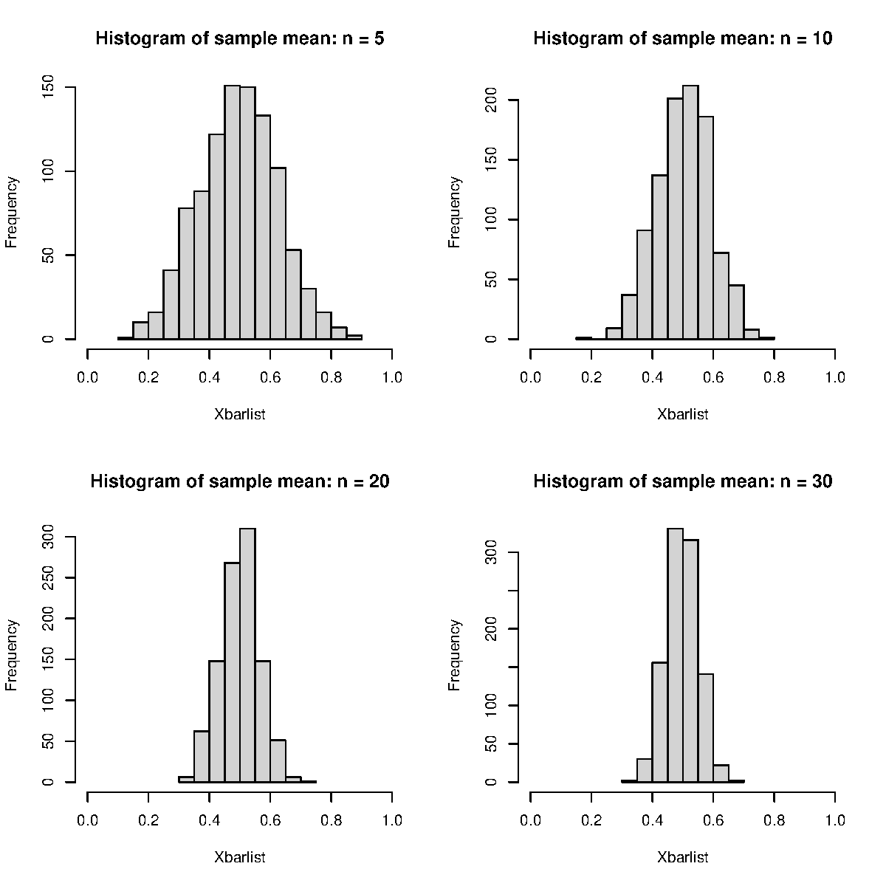
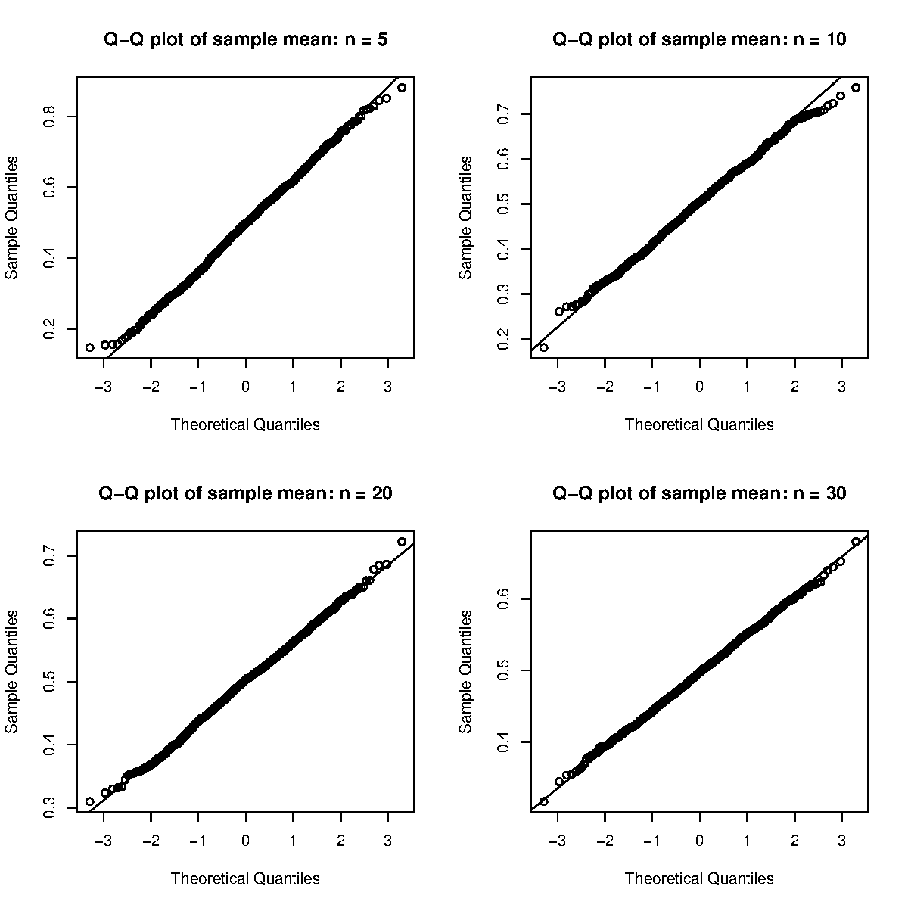
2.3 CLT for random samples drawn from the exponential
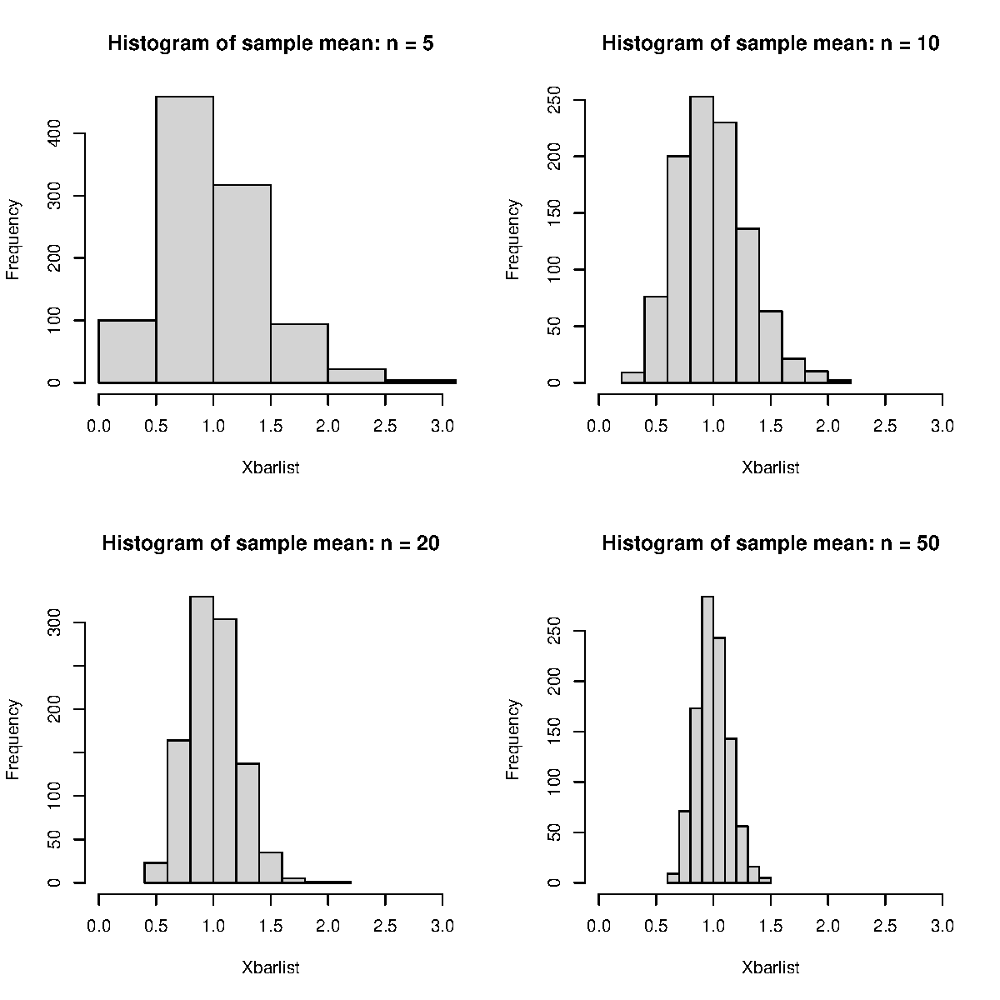
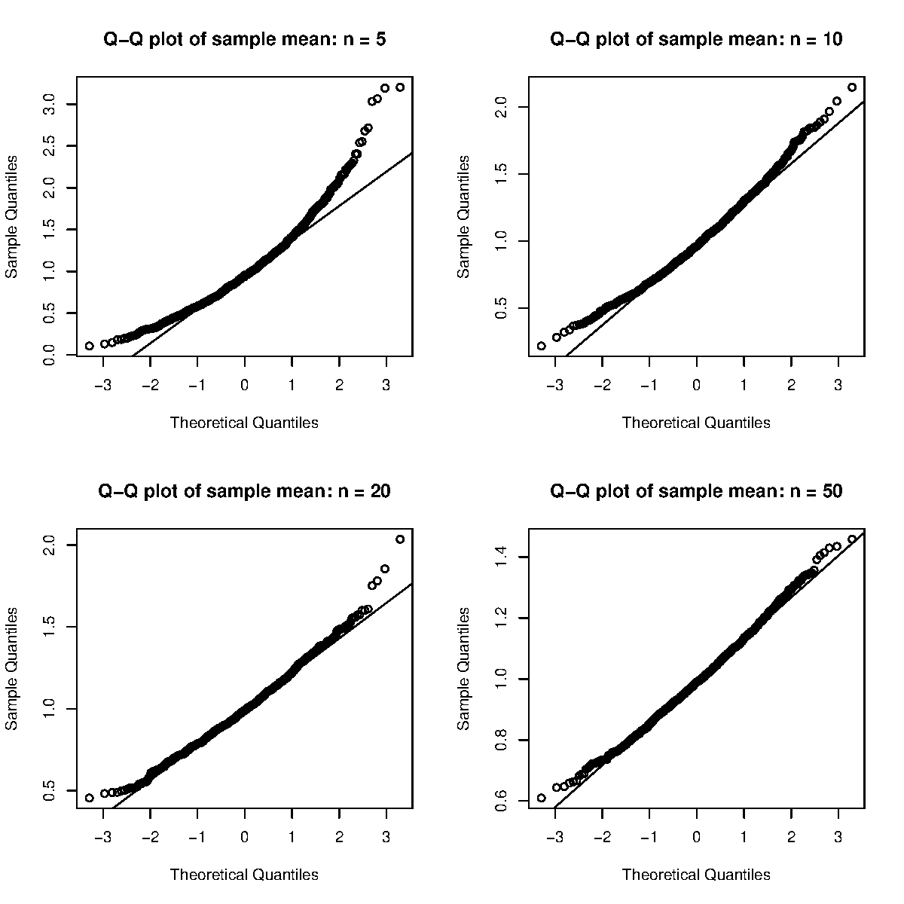
Predict: the uniform is symmetric and the exponential is not. Which one needs a bigger \(n\) before its Q-Q plot looks like a straight line?
NoteAnswer
The exponential needs a much bigger \(n\). The uniform sample mean already looks close to normal at \(n = 5\). For the exponential, the Q-Q plot still bends at \(n = 20\), because of the right skew.
The main reason is skewness. By the Edgeworth expansion, the leading error term of the normal approximation is proportional to \(\gamma / \sqrt{n}\), where \(\gamma\) is the population skewness. The uniform has \(\gamma = 0\), so this term vanishes and the error is of order \(1/n\). The exponential has \(\gamma = 2\).
So “\(n > 30\) is enough” is a rule of thumb, not a theorem. How large \(n\) must be depends on the population.
Ask AI:I am a statistics graduate student. The rule of thumb 'n > 30 is large enough for the CLT' is often taught. Explain where that number came from historically, give two concrete distributions where n = 30 is badly insufficient, and say what a practising statistician should check instead of relying on the rule.
2.4 Application: a model’s accuracy is a sample mean
- A benchmark is a fixed set of test questions with known answers. A model’s accuracy on it is the fraction of questions it answers correctly.
- Score question \(i\) as \(X_i = 1\) if the answer is right and \(X_i = 0\) if not. The accuracy on \(n\) questions is then \(\bar{X}\).
- We treat the questions as independent draws from a large population of similar questions, with the model and its settings fixed. Let \(\theta\) be the probability that the model answers a randomly drawn question correctly. Then \(X_1, \ldots, X_n\) are i.i.d. \(\mathrm{Bern}(\theta)\), and by the CLT, \(\bar{X}\) approximately follows \(\mathrm{N}(\theta, \theta(1-\theta)/n)\).
- Below, a model with \(\theta = 0.88\) answers 10,000 test sets of \(n\) questions, for \(n\) = 25, 100, and 1000.
The spread of each histogram is about \(\sqrt{\theta(1-\theta)/n}\), so it shrinks as \(n\) grows. The margin of error \(z_{0.025}\sqrt{\theta(1-\theta)/n}\) for common benchmark sizes is:
Predict: two models score 88% and 89% on a benchmark of 500 questions. Is the gap larger than the margin of error of one model’s accuracy?
NoteAnswer
No. With 500 questions the margin of error is about 0.028, almost 3 percentage points. A gap of 1 point is well inside it.
For a margin of error of 0.01, solve \(z_{0.025}\sqrt{\theta(1-\theta)/n} \le 0.01\) for \(n\):
ceiling((qnorm(0.975) * sqrt(0.88 * 0.12) / 0.01)^2) # 4057 questionsIn Python:
np.ceil((scipy.stats.norm.ppf(0.975) * np.sqrt(0.88 * 0.12) / 0.01)**2) # 4057 questionsThis is only a rough check. To test the gap, you need the standard error of the difference. The answers of two models on the same questions are not independent samples, so Section 3.3 uses a paired test.
References:
- Miller (2024) Adding Error Bars to Evals: A Statistical Approach to Language Model Evaluations. arXiv preprint.
- Card, Henderson, Khandelwal, Jia, Mahowald, and Jurafsky (2020) With Little Power Comes Great Responsibility. EMNLP 2020. 9263–9274.
- Madaan et al. (2024) Quantifying Variance in Evaluation Benchmarks. arXiv preprint.
3 Confidence interval
3.1 Case I: known variance, normality
- Under normality, the distribution of the sample mean \(\bar{X}\) is \(\bar{X} \sim \mathrm{N}(\mu, \sigma^2/n)\).
- Due to the normality of \(\bar{X}\), we can standardize:
\[ Z = \frac{\bar{X} - \mu}{\sigma/\sqrt{n}} \sim \mathrm{N}(0, 1). \]
- Thus
\[ \begin{aligned} 1 - \alpha &= P(z_{1 - \alpha/2} < Z < z_{\alpha/2})\\ &= P\left(z_{1 - \alpha/2} < \frac{\bar{X} - \mu}{\sigma/\sqrt{n}} < z_{\alpha/2} \right)\\ &= P(\bar{X} - z_{\alpha/2} \sigma/{\sqrt{n}} < \mu < \bar{X} + z_{\alpha/2} \sigma/{\sqrt{n}}). \end{aligned} \]
3.2 Getting the quantile
Denote by \(z_{u}\) the upper \(u\) quantile of the standard normal distribution: \(P(Z > z_u) = u\), so \(z_u\) is the \(100(1-u)\)th percentile and \(z_u = -z_{1-u}\). For example, \(z_{0.025} \approx 1.96\). We use the same notation for \(t\) quantiles. To compute \(z_{0.025}\) in R and Python:
The R function qnorm and the Python function scipy.stats.norm.ppf compute the same quantile. Python has no lower=FALSE option, so we take the negative, or use scipy.stats.norm.isf.
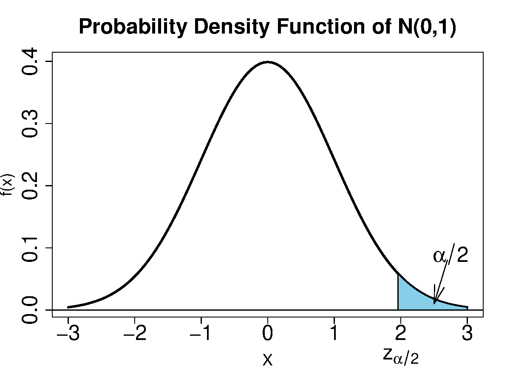
3.3 Standard error versus standard deviation
When \(\sigma\) is known, the confidence interval of the mean is \(\bar{X} \pm z_{\alpha/2} \sigma/{\sqrt{n}}\):
- We call \(\sigma/\sqrt{n}\) the standard error of \(\bar{X}\), which is the standard deviation of the sampling distribution of \(\bar{X}\).
- Note that \(\sigma\) is the standard deviation of \(X\).
When \(\sigma\) is unknown, we use the sample standard deviation \(S\) to estimate \(\sigma\). The confidence interval \(\bar{X} \pm z_{\alpha/2} S/{\sqrt{n}}\) is then a large-sample approximation. Under normality, the exact interval uses a \(t\) quantile (Case II below).
- The standard error \(S/\sqrt{n}\) is the estimate of the standard deviation of the sampling distribution of \(\bar{X}\).
3.4 Coverage probability of a random confidence interval
- For simplicity, we assume the variance \(\sigma^2\) is known.
- In practice, we observe only one sample, and give a confidence interval \(\bar{X} \pm z_{\alpha/2} \sigma/{\sqrt{n}}\). We are \(100 (1-\alpha)\%\) confident that this interval contains the true parameter \(\mu\).
- The confidence means the coverage probability, which is the probability of the interval containing the true parameter under the sampling distribution.
- Now we use a simulation study to simulate the sampling distribution and assess the coverage probability.
The estimated coverage is close to 0.95. Next we look at what happens when the variance is unknown and when the population is not normal.
3.5 Case II: unknown variance, normality
The normality of \(X\) gives
\[ \frac{\bar{X}-\mu}{\sigma/\sqrt{n}} \sim \mathrm{N}(0, 1). \]
By replacing \(\sigma\) by its estimator \(S\) we have
\[ \frac{\bar{X}-\mu}{S/\sqrt{n}} \sim t_{n-1}, \]
where \(S^2 = \frac{1}{n-1}\sum_{i=1}^n (X_i - \bar{X})^2\) is the sample variance.
Question: Why does \(T = (\bar{X} - \mu)/ (S / \sqrt{n})\) follow \(t_{n-1}\)?
Answer: Student’s theorem. If \(X_1, \ldots, X_n \stackrel{\mathrm{iid}}{\sim} \mathrm{N}(\mu, \sigma^2)\), then
- \((\bar{X} - \mu)/(\sigma/\sqrt{n}) \sim \mathrm{N}(0, 1)\);
- \((n-1)S^2/\sigma^2 \sim \chi^2_{n-1}\);
- \(\bar{X}\) and \(S^2\) are independent.
Recall the \(t\)-distribution: \(Z/\sqrt{X/v}\sim t_{v}\), where \(Z\sim \mathrm{N}(0,1)\), \(X\sim \chi^2_v\), and \(Z, X\) are independent. We have
\[ T = \frac{\bar{X} - \mu}{S/\sqrt{n}} = \frac{\dfrac{\bar{X} - \mu}{\sigma/\sqrt{n}}}{\sqrt{\dfrac{(n-1)S^2}{\sigma^2}\Big/(n-1)}} \sim t_{n-1}. \]
- The \(t\)-distribution with degrees of freedom \(n-1\) has heavier tails than \(\mathrm{N}(0, 1)\).
- Thus we still have
\[ \begin{aligned} 1 - \alpha &= P\left(t_{1 - \alpha/2, n-1} < \frac{\bar{X} - \mu}{S/\sqrt{n}} < t_{\alpha/2, n-1} \right)\\ &= P(\bar{X} - t_{\alpha/2, n-1} S/{\sqrt{n}} < \mu < \bar{X} + t_{\alpha/2, n-1} S/{\sqrt{n}}). \end{aligned} \]
- The distribution \(t_n\) converges to \(\mathrm{N}(0, 1)\) as \(n \to \infty\).
By hand: fill in the margin of error so this interval uses the \(t\) quantile and the estimated standard deviation. Done when the printed coverage is near 0.95. No AI for this block.
NoteSolution
Use the \(t\) quantile and each sample’s own \(S\).
se <- qt(1 - alp/2, n - 1) * sdlist / sqrt(n)In Python:
se = scipy.stats.t.ppf(1 - alp/2, n - 1) * sdlist / np.sqrt(n)This gives about 0.9504. Two things changed from case I. First, the quantile comes from qt with \(n-1\) degrees of freedom, not from qnorm. Second, the width now varies from row to row, because each simulated sample has its own \(S\).
If you use qnorm here instead, coverage drops to roughly 0.93. The \(t\) quantile is larger than the normal quantile, and the extra width accounts for the uncertainty in estimating \(\sigma\).
3.6 Case III: non-normality, large sample
- For an i.i.d. sample with finite variance, by the CLT the sample mean \(\bar{X}\) approximately follows \(\mathrm{N}(\mu, \sigma^2/n)\) when \(n\) is large. A common rule of thumb is \(n > 30\) or \(n > 50\), but how large is large enough depends on the population (see the lognormal example below).
- Thus we still have, approximately,
\[ \begin{aligned} Z &= \frac{\bar{X} - \mu}{\sigma/\sqrt{n}} \sim \mathrm{N}(0, 1),\\ 1 - \alpha &= P(\bar{X} - z_{\alpha/2} \sigma/{\sqrt{n}} < \mu < \bar{X} + z_{\alpha/2} \sigma/{\sqrt{n}}). \end{aligned} \]
- If the variance is unknown, we use \(S\), which is a consistent estimator of \(\sigma\) as \(n \to \infty\). With Slutsky’s theorem, we get the large-sample approximation
\[ \begin{aligned} Z &= \frac{\bar{X} - \mu}{S/\sqrt{n}} \sim \mathrm{N}(0, 1),\\ 1 - \alpha &= P(\bar{X} - z_{\alpha/2} S/{\sqrt{n}} < \mu < \bar{X} + z_{\alpha/2} S/{\sqrt{n}}). \end{aligned} \]
- We will investigate how large \(n\) should be in Section 3.3.
By hand: fill in the margin of error for case III. The population is now exponential, not normal. Done when the printed coverage is clearly below 0.95. No AI for this block.
NoteSolution
Use the normal quantile with the estimated standard error.
moe <- qnorm(1 - alp/2) * sdlist / sqrt(n)In Python:
moe = scipy.stats.norm.ppf(1 - alp/2) * sdlist / np.sqrt(n)The coverage is about 0.90, not 0.95. The code is correct. At \(n = 20\), the normal approximation with an estimated standard error is not accurate enough for this skewed population. About one interval in ten misses the true mean, instead of one in twenty.
3.7 How large is large enough?
Even at \(n = 200\), the coverage has not quite reached 0.95. The coverage moves slowly toward 0.95 as \(n\) grows.
3.8 Application: how long an AI model takes to answer
- The latency of an AI model is the time from sending a question to receiving the full answer.
- Latency is positive and often right-skewed. Most answers come quickly, and a few long answers take many times longer.
- A common model for such data is the lognormal distribution. A positive random variable \(X\) follows a lognormal distribution if \(\log X\) follows a normal distribution, \(\log X \sim \mathrm{N}(\mu_{\log}, \sigma_{\log}^2)\).
- In this example, \(X\) is the latency in seconds, with \(\mu_{\log} = 0\) and \(\sigma_{\log} = 1.2\). Then the median is \(e^0 = 1\) second and the mean is \(e^{0 + 1.2^2/2} \approx 2.05\) seconds.
- We repeat
CovProbabove with lognormal latencies in place of exponential ones.
Predict: at \(n = 30\), will the coverage be closer to 0.95 than in the exponential case above?
NoteAnswer
No, it is further away. The coverage is about 0.76 at \(n = 10\), 0.84 at \(n = 30\), and 0.92 at \(n = 200\).
The skewness of this lognormal is \((e^{\sigma_{\log}^2} + 2)\sqrt{e^{\sigma_{\log}^2} - 1} \approx 11\), compared with 2 for the exponential, and the coverage approaches 0.95 more slowly. Reports on model speed often give the median and a high percentile, such as the 99th, and not only the mean. The mean is hard to estimate well when the data are this skewed, and users care about the slow answers.
References:
- Dean and Barroso (2013) The Tail at Scale. Communications of the ACM. 56(2). 74–80.
- Limpert, Stahel, and Abbt (2001) Log-normal Distributions across the Sciences: Keys and Clues. BioScience. 51(5). 341–352.
- Yang, Xu, and Jiao (2024) A Queueing Theoretic Perspective on Low-Latency LLM Inference with Variable Token Length. arXiv preprint.
3.9 Violation of the independence assumption
- The confidence intervals that we have computed assume that \(X_1, \ldots, X_n\) are independent. Dependence changes the variance of \(\bar{X}\), and then the coverage.
- We assume \((X_1, \ldots, X_n)\) is jointly normal, each \(X_i\) follows \(\mathrm{N}(0, 1)\), but
\[ \mathbf{Cov}(X_1, \ldots, X_n) = \boldsymbol{\Sigma} = \left( \begin{array}{ccccc} 1 & \rho & \ldots & \rho\\ \rho & 1 & \ldots & \rho\\ \vdots &\vdots &\vdots &\vdots \\ \rho & \rho & \ldots & 1\\ \end{array}\right), \]
where \(\Sigma_{ij} = \mathrm{Cov}(X_i, X_j)\).
- Assume \(\sigma = 1\) is known. We compute confidence intervals as \(\bar{X} \pm z_{\alpha/2} \sigma/{\sqrt{n}}\). We investigate the coverage probability of \(\mu = 0\) as \(\rho\) varies.
3.10 Generating dependent samples
First, we compute \(\boldsymbol{\Sigma}^{1/2}\) such that \(\boldsymbol{\Sigma}^{1/2} \boldsymbol{\Sigma}^{1/2} = \boldsymbol{\Sigma}\).
We generate a dependent sample \(X_1, \ldots, X_5\) such that \(\mathrm{Cov}(X_i, X_j) = 0.1\) for \(i \neq j\).
The same code was used in Section 3.1 to generate an i.i.d. five-dimensional multivariate normal. However, the two tasks are different in concept. There, five numbers were one observation of a vector. Here, five numbers are five correlated observations of a scalar.
How about many samples at once?
The off-diagonal entries are close to 0.1, as we want.
3.11 Coverage as \(\rho\) varies
Predict: \(\rho = 0.1\) is a small correlation. Before you run the next block, guess the coverage of the nominal 95% interval at \(\rho = 0.1\).
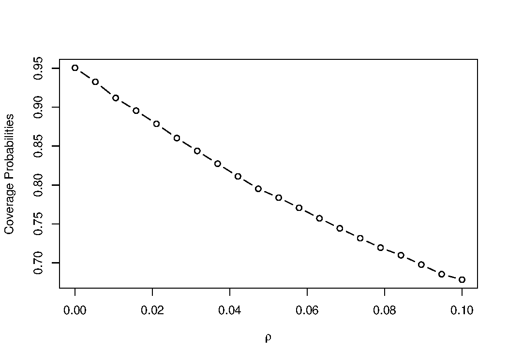
NoteAnswer
With \(n = 30\), coverage falls from 0.95 to about 0.68 at \(\rho = 0.1\).
The reason is that the variance of the mean under equicorrelation (every pair has correlation \(\rho\)) is
\[ \mathrm{Var}(\bar{X}) = \frac{\sigma^2}{n}\left[1 + (n-1)\rho\right]. \]
With \(n = 30\) and \(\rho = 0.1\) the bracket is \(1 + 29(0.1) = 3.9\). The true standard error is almost twice what the formula assumes, so the interval is about half as wide as it should be.
The exact coverage is \(2\Phi\big(z_{0.025}/\sqrt{3.9}\big) - 1 \approx 0.68\).
Notice the \(n\) in the bracket. For a fixed \(\rho > 0\), the factor \(1 + (n-1)\rho\) grows with \(n\), so the usual standard error \(\sigma/\sqrt{n}\) understates the true one more and more. The true variance still decreases, but toward \(\sigma^2\rho\), not zero. For this reason, cluster-randomized trials report a design effect.
The code appears better (but not faster) with the sapply function:
Python has no sapply. A list comprehension does the same job.
as compared with
covprobs <- rep(NA, 20)
for (i in seq(20)) {
covprobs[i] <- CovProb2(rhos[i])
}covprobs = np.full(20, np.nan)
for i in range(20):
covprobs[i] = CovProb2(rhos[i])3.12 Application: benchmark questions that come in groups
- Many reading tests for AI models give a short passage, and then ask several questions about it.
- For example:
- Passage: “A study compares two diets, with 20 people in each group. The mean weight loss is 3 kg for diet A and 1 kg for diet B, with p = 0.03.”
- Questions:
- Which diet did better?
- Is the difference significant at the 5% level?
- How many people were in the study?
- If the model misreads p = 0.03 as 0.3, it may get several of these questions wrong together.
- If a model misreads a passage, it often misses several of its questions. So the answers about the same passage are correlated.
- The usual standard error assumes that all answers are independent, so it is too small. This is the same problem as the dependent samples above.
- A simple fix: average the answers within each passage, and use the passage averages as the sample.
In the simulation below, there are 40 passages with 5 questions each. Each passage is either easy or hard, with probability 1/2. The model answers a question correctly with probability 0.9 for an easy passage and 0.5 for a hard one, so the true accuracy is 0.7.
Predict: which of the two intervals covers close to 0.95?
NoteAnswer
The interval based on passage averages. In R it covers about 0.94 of the time, and the naive interval covers only about 0.84.
Two answers about the same passage have correlation \(\rho \approx 0.19\) here. As for the dependent samples above, the variance of the accuracy is larger by the design effect \(1 + (m-1)\rho = 1 + 4(0.19) \approx 1.76\). So the naive standard error is too small by the factor \(\sqrt{1.76} \approx 1.33\). Miller (2024, Section 2.2) makes the same point for AI benchmarks.
References:
- Miller (2024) Adding Error Bars to Evals: A Statistical Approach to Language Model Evaluations. arXiv preprint. Section 2.2.
- Moulton (1990) An Illustration of a Pitfall in Estimating the Effects of Aggregate Variables on Micro Units. Review of Economics and Statistics. 72(2). 334–338.
- Kish (1965) Survey Sampling. New York: Wiley.
4 Confidence interval for a proportion
4.1 Normal approximation of Bernoulli
- Suppose \(X_1, \ldots, X_n\) are i.i.d. \(\mathrm{Bern}(\theta)\), with \(0 < \theta < 1\).
- If \(n\) is sufficiently large, from the classical CLT, \(\bar{X}\) approximately follows \(\mathrm{N}(\theta, \theta(1-\theta)/n)\).
- Some textbooks suggest \(\min\{n\theta, n(1-\theta)\} \ge 15\) makes such an approximation good enough.
- Equivalently,
\[ \frac{\overline{X}-\theta}{\sqrt{\theta(1-\theta)/n}} \sim \mathrm{N}(0,1), \text{ approximately.} \]
- For \(\alpha \in (0, 1)\),
\[ \begin{aligned} 1 - \alpha &\approx P\left(-z_{\alpha/2} < \frac{\bar{X}-\theta}{\sqrt{\theta(1-\theta)/n}}< z_{\alpha/2} \right)\\ &= P\left(\bar{X} - z_{\alpha/2} \sqrt{\tfrac{\theta(1-\theta)}{n}} < \theta < \bar{X} + z_{\alpha/2} \sqrt{\tfrac{\theta(1-\theta)}{n}} \right). \end{aligned} \]
4.2 Six intervals for a proportion
- The Wald \(100(1-\alpha)\%\) confidence interval:
\[ \bar{X} \pm z_{\alpha / 2} \sqrt{\frac{\bar{X}(1-\bar{X})}{n}}. \]
- The simple conservative \(100(1-\alpha)\%\) confidence interval:
\[ \bar{X} \pm z_{\alpha / 2} \frac{0.5}{\sqrt{n}}. \]
- The Wilson (score) \(100(1-\alpha)\%\) confidence interval:
\[ \frac{n \bar{X}+0.5 z_{\alpha / 2}^{2}}{n+z_{\alpha / 2}^{2}} \pm \frac{z_{\alpha / 2} \sqrt{n \bar{X}(1-\bar{X})+0.25 z_{\alpha / 2}^{2}}}{n+z_{\alpha / 2}^{2}}. \]
This interval can be obtained in R or Python with:
prop.test(x = n * xbar, n = n, conf.level = 1 - alp, correct = FALSE)$conf.intfrom statsmodels.stats.proportion import proportion_confint
proportion_confint(n * xbar, n, alpha=alp, method="wilson")- The Clopper-Pearson \(100(1-\alpha)\%\) interval has left endpoint
\[ \left(1+\frac{n-n \bar{X}+1}{n \bar{X} F_{1-\alpha / 2, \ 2 n \bar{X}, \ 2(n-n \bar{X}+1)}}\right)^{-1}, \]
and right endpoint
\[ \left(1+\frac{n-n \bar{X}}{(n \bar{X}+1) F_{\alpha / 2, \ 2(n \bar{X}+1), \ 2(n-n \bar{X})}}\right)^{-1}. \]
Here \(F_{u, v_1, v_2}\) is the \(100(1-u)\)th percentile of the \(F\)-distribution with degrees of freedom \(v_1\) and \(v_2\). In R it is qf(u, v1, v2, lower.tail = FALSE). When \(n\bar{X} = 0\) the left endpoint is 0, and when \(n\bar{X} = n\) the right endpoint is 1. The interval is obtained with:
binom.test(x = n * xbar, n = n, conf.level = 1 - alp)$conf.intfrom statsmodels.stats.proportion import proportion_confint
proportion_confint(n * xbar, n, alpha=alp, method="beta")- The Agresti-Coull \(100(1-\alpha)\%\) confidence interval:
\[ \hat{p} \pm z_{\alpha / 2} \sqrt{\frac{1}{n + z_{\alpha / 2}^2}\hat{p}(1-\hat{p})}, \qquad \hat{p} = \frac{n\bar{X} + z_{\alpha / 2}^2/2}{n+z_{\alpha / 2}^2}. \]
library(binom)
binom.confint(x = n * xbar, n = n, conf.level = 1 - alp, methods = "ac")from statsmodels.stats.proportion import proportion_confint
proportion_confint(n * xbar, n, alpha=alp, method="agresti_coull")- The Jeffreys \(100(1-\alpha)\%\) confidence interval: the \(100(1-\alpha)\%\) Bayesian credible interval using Jeffreys’ prior on the binomial proportion.
library(binom)
binom.bayes(x = n * xbar, n = n, type = "central", conf.level = 1 - alp)from statsmodels.stats.proportion import proportion_confint
proportion_confint(n * xbar, n, alpha=alp, method="jeffreys")4.3 Comparing the six
Our goal is to compare the differences among the six confidence intervals in terms of coverage probability and expected width. We use the same generated data for all six methods.
- Tip 1: Always report the standard error of entries in the table so a reader can gauge the accuracy.
- Tip 2: Since humans cannot understand more than two digits very easily, round your results to two or three digits.
References:
- Brown, Cai, and DasGupta (2001) Interval Estimation for a Binomial Proportion. Statistical Science. 16(2). 101–133.
- Wikipedia: Binomial proportion confidence interval
binompackage manual
Python has no single package that matches binom for all six methods. statsmodels.stats.proportion.proportion_confint covers five of them: Wald, Wilson, Agresti-Coull, Clopper-Pearson (method="beta"), and Jeffreys (method="jeffreys"). The simple conservative interval is easy to compute directly.
Based on the current simulation result, which method is favorable?
Run in Codespace: the same comparison with \(B = 10000\), which is too slow for the browser.
file:
notes/section3/run/s3p2_binom_ci.R
NoteReading the table
At this one setting, Wald looks fine. The exact coverages at \(\theta = 0.6\), \(n = 40\) are 0.946 for Wald and for Jeffreys, and 0.966 for the other four. The expected widths are close: 0.287 for Wilson, 0.300 for Wald, and 0.314 for Clopper-Pearson.
However, the coverage of a binomial interval is a function of \(\theta\), and for Wald this function drops far below 0.95 when \(\theta\) is near 0 or 1:
| \(\theta\) | 0.02 | 0.05 | 0.10 | 0.20 | 0.50 | 0.60 |
|---|---|---|---|---|---|---|
| Wald | 0.553 | 0.868 | 0.914 | 0.905 | 0.919 | 0.946 |
| Wilson | 0.954 | 0.952 | 0.943 | 0.928 | 0.962 | 0.966 |
Over a fine grid of \(\theta \in (0.01, 0.99)\), Wald averages about 0.90 coverage and Wilson about 0.95. Wilson can also fall below 0.90 for some \(\theta\) very close to 0 or 1, but much less often and by much less. This is why Brown, Cai, and DasGupta recommend against Wald, even though it looks fine at \(\theta = 0.6\).
Change theta to 0.05 and run the blocks again. Then look at the se rows: with \(B = 1000\), the standard error of a coverage estimate near 0.95 is about 0.007. To judge a difference between two methods, use the standard error of the difference. All six methods use the same samples, so it is sd(cover1 - cover2) / sqrt(B), which can be much smaller than 0.007.
4.4 Application: asking a model the same question 50 times
- A language model samples each word (token) of its answer (Section 3.1, Sampling the next word). The same question can therefore get different answers.
- We asked
llama3.2:1bthe question below 50 times (Sep 26, 2026). It is the small open-weight model from Section 2.4: its parameters are public, so you can run it on your own computer. We used the default temperature, the setting that controls how random the sampling is.
Which is larger, 9.9 or 9.11? Answer with the number only.
- The answers were
9.922 times,1017 times,9.118 times, and9.993 times. The raw answers are indata/s3p2_llama_answers.csv. - Let \(\theta\) be the probability that this model answers correctly, with the model and its settings fixed. We treat the 50 runs as independent \(\mathrm{Bern}(\theta)\) trials. Each run starts a new conversation, so no run sees the answers of the others. Still, independence is an assumption that we make. Under this assumption, the intervals of this section apply.
Run in Codespace: the model runs in the Codespace or on IDAS, not in the browser.
library(ellmer)
q <- "Which is larger, 9.9 or 9.11? Answer with the number only."
answers <- character(50)
for (i in 1:50) {
answers[i] <- trimws(chat_ollama(model = "llama3.2:1b")$chat(q, echo = "none")) # a new chat each time
}
table(answers)file:
notes/section3/run/s3p2_llama_repeat.Rimport json, urllib.request
from collections import Counter
q = "Which is larger, 9.9 or 9.11? Answer with the number only."
answers = [""] * 50
for i in range(50): # a new chat each time
req = urllib.request.Request("http://localhost:11434/api/chat",
data=json.dumps({"model": "llama3.2:1b", "stream": False,
"messages": [{"role": "user", "content": q}]}).encode(),
headers={"Content-Type": "application/json"})
answers[i] = json.load(urllib.request.urlopen(req))["message"]["content"].strip()
print(Counter(answers))file:
notes/section3/run/s3p2_llama_repeat.pyPredict: does this model answer correctly more often than a coin flip would?
NoteAnswer
We cannot tell. The estimate is \(22/50 = 0.44\). The Wilson interval is about \((0.31, 0.58)\) and the Clopper-Pearson interval about \((0.30, 0.59)\). Both contain 0.5.
To measure a model’s success rate on one question, we ask it many times and count the correct answers. Chen et al. (2021) do this for code. They draw \(n = 200\) answers for each programming problem. From the count of correct answers, they estimate pass@\(k\), the chance that at least one of \(k\) answers is correct. Wang et al. (2023) use repeated answers in another way: they sample many answers to one question and keep the answer that appears most often.
Run the file above on IDAS or in the Codespace. With the same model and settings, your 50 answers will differ from ours, but your interval will very likely overlap ours.
References:
- Chen et al. (2021) Evaluating Large Language Models Trained on Code. arXiv preprint.
- Wang, Wei, Schuurmans, Le, Chi, Narang, Chowdhery, and Zhou (2023) Self-Consistency Improves Chain of Thought Reasoning in Language Models. ICLR 2023.